B-proof: does gen12's constraint load degrade paint quality?
One variable changed: the prompt. Same base model, same seed as the gen12 final roll, same 4K
resolution, same theme_prompt text verbatim, flat pale backdrop matching gen12's. The froggo-style condition
states the control roster once (~600 chars) with zero mask / sprite-strip / empty-socket / exact-fit /
zero-residue / two-panel clauses; gen12's shipping prompt is ~9,000 chars of hard constraints.
models: fal-ai/gemini-3-pro-image-preview/edit (gen12 rolls, ~$0.15/roll via fal) ·
gemini-3-pro-image-preview via Vertex AI global (froggo-style rolls — same base model;
fal balance was exhausted, so the light-prompt rolls went through Google directly, ~$0.24/4K image) ·
crops/page = local $0 · this experiment's new spend: 2 rolls × ~$0.24 ≈ $0.48
(gen12 comparison paints were pre-existing, no re-spend).
steam-porthole (templated mode · seed 84)
gen12 — heavy constraints
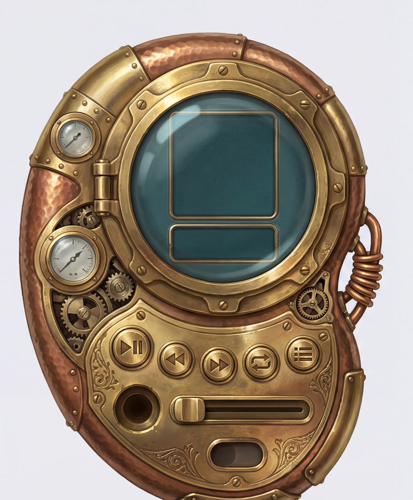
gen12 pipeline paint (device area of paint.png) · model fal-ai/gemini-3-pro-image-preview/edit ·
seed 84 · res 4K 5:4 two-panel joint (device column ≈ 2304×2784 px of a 4608×3712 canvas) ·
prompt 9,161 chars · input: grey placeholder blueprint + colored guide outlines.
froggo-style — light prompt
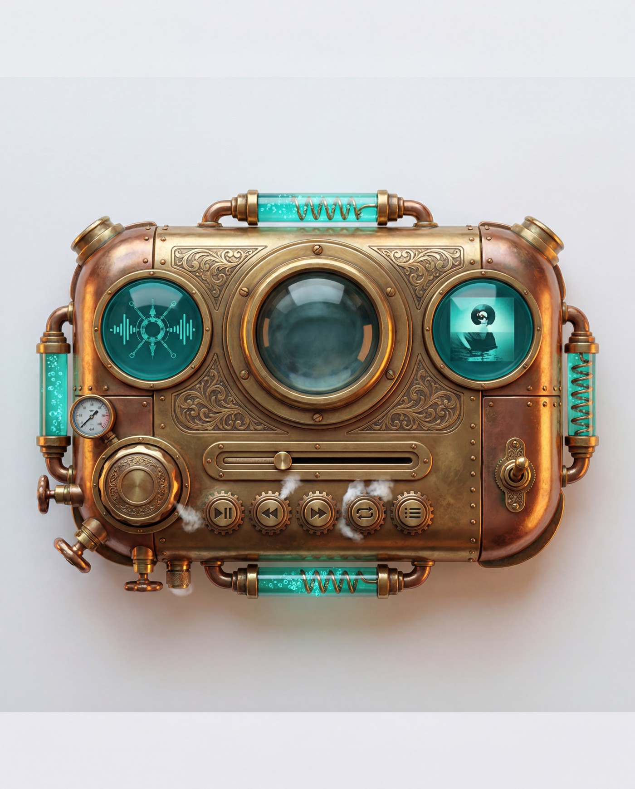
froggo-style render · model gemini-3-pro-image-preview (Vertex, same base model) ·
seed 84 · res 4K 4:5 single panel (3712×4608 px) · prompt 618 chars ·
input: flat 1200×1500 RGB(235,235,238) canvas.
volume knob area
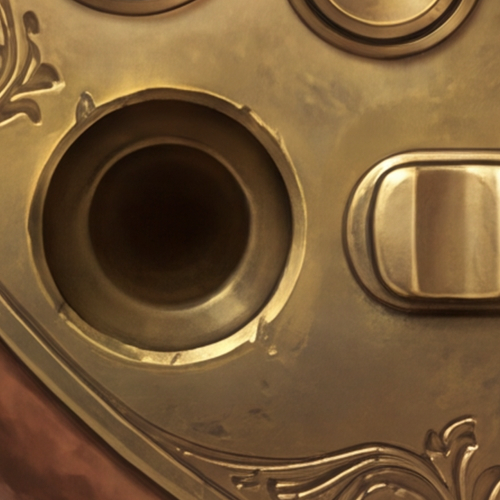
gen12 (socket kept empty by design)
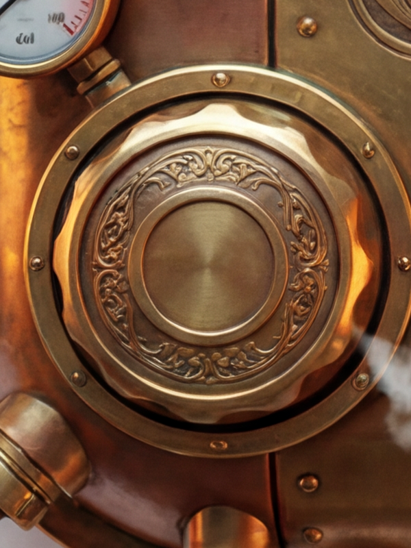
froggo-style (knob installed)
porthole / display
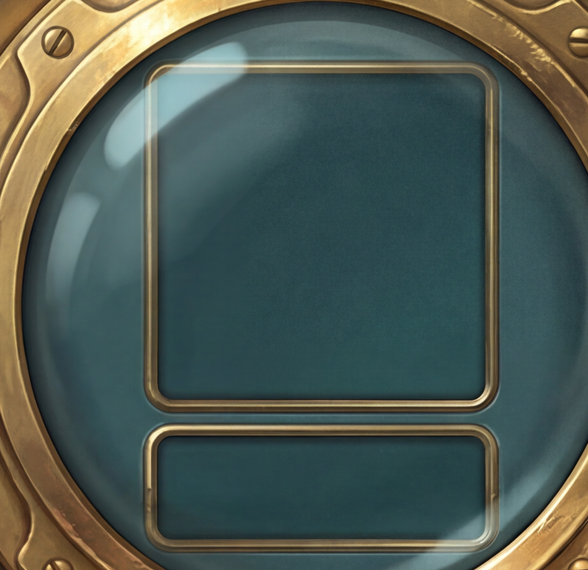
gen12 (blank screens by design)
diablo-gothic (templateless mode · seed 110)
gen12 — heavy constraints
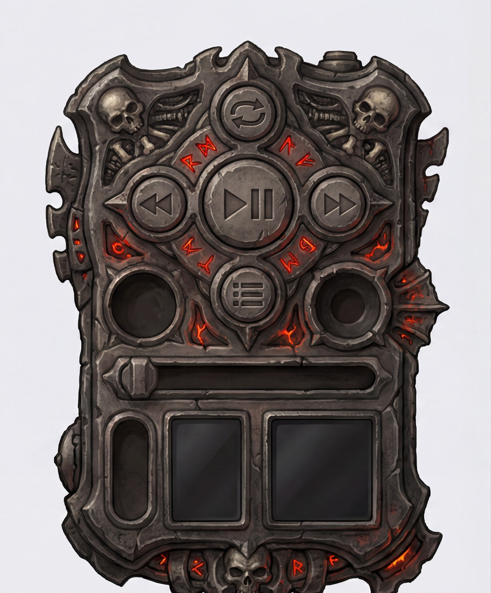
gen12 pipeline paint (device area of paint.png) · model fal-ai/gemini-3-pro-image-preview/edit ·
seed 110 · res 4K 5:4 two-panel joint (device column ≈ 2304×2784 px) ·
prompt 9,016 chars · input: scaffold canvas (flat backdrop + dividers, no control geometry).
froggo-style — light prompt
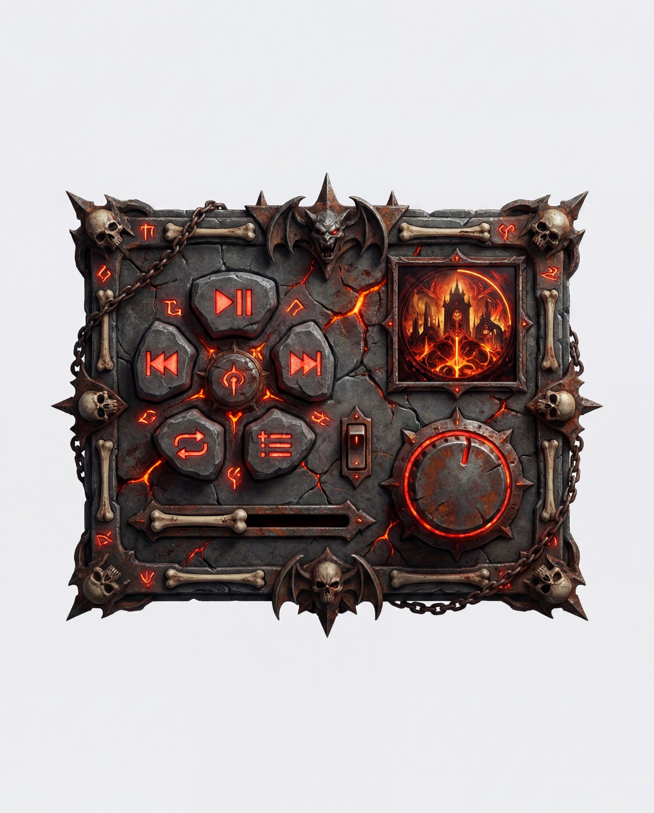
froggo-style render · model gemini-3-pro-image-preview (Vertex, same base model) ·
seed 110 · res 4K 4:5 single panel (3712×4608 px) · prompt 603 chars ·
input: flat 1200×1500 RGB(235,235,238) canvas.
transport button cluster
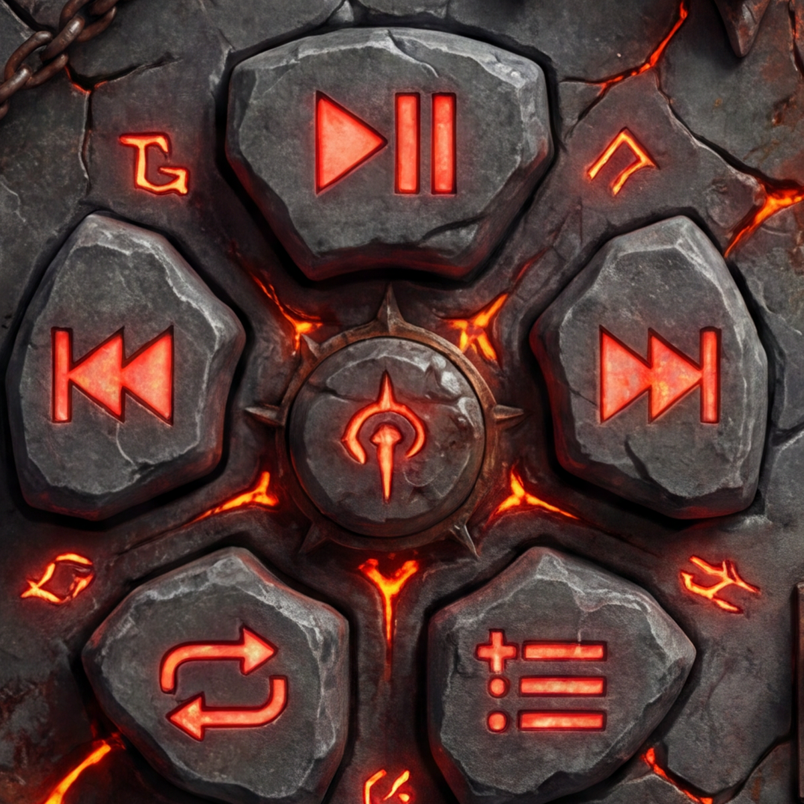
froggo-style
volume knob area
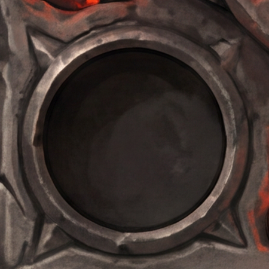
gen12 (socket kept empty by design)
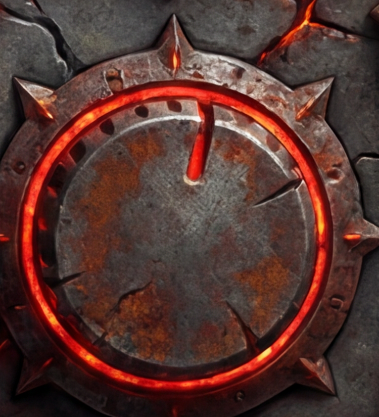
froggo-style (knob installed)
seek slider
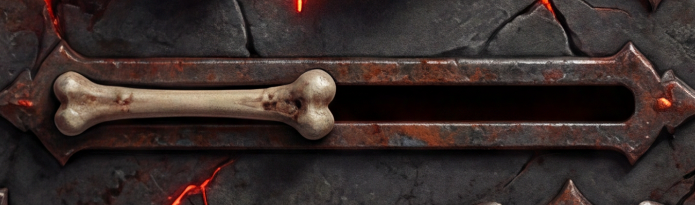
froggo-style (thumb installed)
Confounds we could NOT fully control (read before concluding)
Serving path: gen12 rolls went through fal's proxy of the model; froggo-style rolls went through
Vertex AI directly (fal balance was exhausted mid-experiment). Same published base model
(gemini-3-pro-image-preview), and the same seed integer was passed — but seed→RNG mapping across the two
serving stacks is not proven identical, so "same seed" is nominal, not bit-exact.
Canvas area per device: gen12's device shares a 5:4 4K canvas with the mask panel and sprite strip
(device ≈ 2304×2784 px ≈ 6.4 MP); the froggo-style device gets the whole 4:5 4K canvas (3712×4608 ≈ 17 MP,
of which the device occupies most). The light condition has roughly 2× the pixel budget on the device itself.
Input image differs by construction: blueprint/scaffold vs flat canvas. This is part of the
"constraint load" variable, but it means layout freedom differs too — the froggo rolls chose landscape
bodies while gen12's vpod is portrait, so composition is not matched.
The froggo renders are NOT pipeline-usable: screens have baked content, knob/thumb/toggle are
installed, no mask panel, no sprite strip. The comparison isolates paint beauty, not usability.
Assessor's read (visual, both full-res inspected)
The light-prompt renders are clearly richer on both themes. Steam: real patina and hammered-copper
variation, bubbling glass tubes, refractive porthole dome, gear-toothed button bezels, steam wisps. Diablo:
volumetric ember glow, lava-lit crack displacement, sculpted chain/bone frame, higher specular energy.
The gap persists on surfaces both conditions were allowed to render freely — button facets, body
panels, engraving. gen12's paint is flatter, more evenly lit, more "clean illustration"; the light-prompt
render reads as a photographed object. That is the B-proof signal: constraint load costs quality even where
no constraint applies.
Part of the froggo beauty is doing forbidden things (populated screens, installed parts, free
landscape layout) — discount those regions when judging.
click or Esc to close · full-res